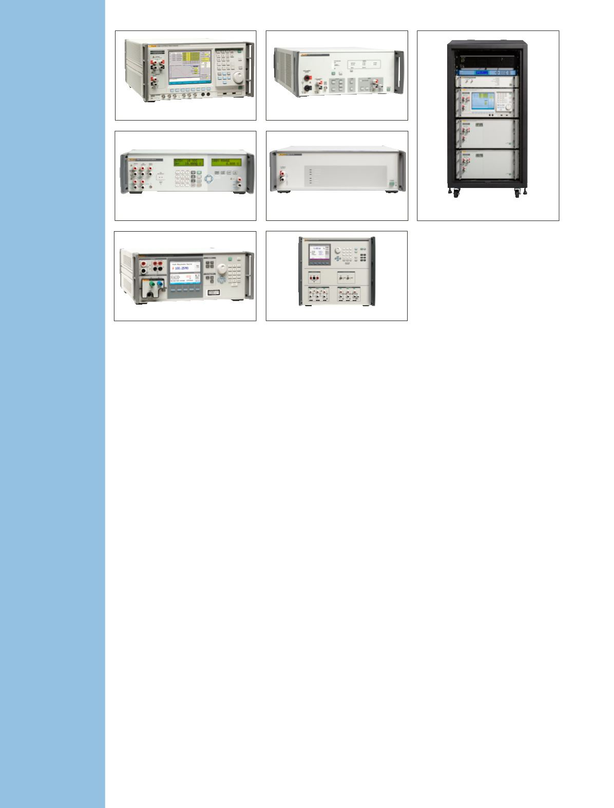

Spezial-
kalibratoren
Kalibratoren für Leistung und
Netzqualität 6105A/6100B
Universelle und hochgenaue
Signalquellen zur Kalibrierung
von Leistungsmessgeräten und
Netzqualitätsanalysatoren.
•
Leistungskalibrierung mit einer
Spannung bis zu 1.008 V und
Strom bis 21 A, und optional
bis zu 80 A
•
Genauigkeit von Spannung
und Strom besser als 0,005 %
(50 ppm)
•
Genauigkeit der
Phasenverschiebung zwischen
Strom und Spannung von 0,003 °
•
Programmierbarer Klirrfaktor bis
zu 100 Oberschwingungen
•
Enthält weitere Netz- und
Spannungsqualitätsphänomene
•
Komplexe Messungen, die eine
große Bandbreite an
Signalen erzeugen
Verstärker 5725A
Der Verstärker Fluke 5725A steigert
die Möglichkeiten der Kalibratoren
der Serie 57XX.
•
Er erweitert die Spezifikation
des Kalibrators für
Wechselspannung/Frequenz
auf 1100 V bei 30 kHz und auf
750 V bei 100 kHz.
•
Erhöht den maximalen Gleich-
und Wechselstrom auf 11 A
6105A/6100B
52120A
7526A
5320A
6135A/PMU
5725A
525B
Transkonduktanzverstärker
52120A
Messen und Kalibrieren von
Leistungsnormalen, Leistungs- und
Energiemessgeräten, Netzqualitäts-
und Stromversorgungsanalysatoren,
Strommesszangen für hohe
Ströme und Rogowski-Spulen.
Lieferumfang:
•
120 A Einzelgerät
•
240 A oder 360 A im
Parallelbetrieb
•
3.000 A oder 6.000 A mit
optionalen Spulen
•
Branchenführende
Verstärkergenauigkeit:
–
100 ppm DC bei 850 Hz
–
120 ppm bei DC und 260 ppm
bei AC im Betrieb als Einzelgerät
•
Frequenzbereich, DC bis 10 kHz
Präzisions-Prozesskalibrator
7526A
Beste Ausgewogenheit
an Wirtschaftlichkeit und
Genauigkeit für die stationäre
Temperaturkalibrierung und
Druck-Prozessinstrumentierung.
•
Geben und Messen von
Gleichspannung, Strom,
Widerstand,
•
Messen und Simulieren von RTDs
und Thermoelementen
•
Druckmessung mit den
Druckmodulen aus den Baureihen
Fluke 700P oder 525A-P
•
Mit 24-V-Schleifenstrom-
versorgung, Funktion zur
automatisierten Prüfung von
Schaltern und Messung von 4 mA
bis 20 mA
Kalibrator für Phasor-Mess-
geräte – 6135A/PMU
Schnelle, automatische Kalibrie-
rung von Phasor-Messgeräten
gemäß IEEE C37.118.1-2011.
Das System enthält Folgendes:
•
PMU-Steuergerät
•
GPS-Empfänger
•
PMU-Test- und Kalibriersoftware
•
Leistungsnormal 6135A
•
Konfigurierter Server-PC
Multifunktions-Elektrotester-
kalibrator 5320A
Überprüfung elektrischer Mess-
geräte mit einem einzelnen
Instrument.
•
Kalibrieren von Isolationsmess-
geräten, Erdungsmessgeräten,
Hochspannungstestern,
Installationstestern und vielen
weiteren Arten von elektrischen
Sicherheitstestern
•
Weniger Tischbreite erforder-
lich als bei kundenspezifischen
Lösungen
•
Integrierte grafische
Kalibrierhilfe
•
LAN-, GPIB-, RS-232-Schnitt-
stellen für PC-basierte
Automatisierung
Temperatur-/Druckkalibra-
tor 525B
Überlegene Genauigkeit und
Funktionalität in einem
wirtschaftlichen Tischpaket.
•
Ein Kalibrator für die Instru-
mente der Prozessindustrie
•
Simuliert und misst alle ANSI-
Thermoelemente sowie L- und
U-Typen und ermöglicht durch
Kaltstellenkompensation die
Kalibrierung vieler verschiedener
Thermoelementinstrumente
•
Direkteingabe zum Speichern
von ITS-90-RTD-Konstanten
•
Unsicherheit bei der Simulation
von RTDs bis 0,03 °C
6
Elektrische Kalibrierung